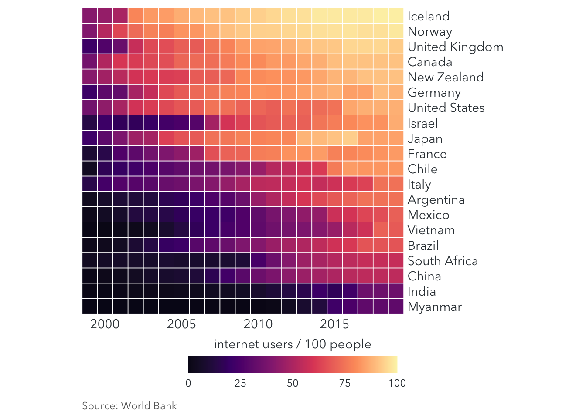

library(ggplot2)
library(dplyr)
text_color = "#353d42"
caption_color = "#666666"
font = "Avenir Next"
country_list = c("United States", "China", "India", "Japan", "Vietnam", "Brazil", "Germany", "France", "United Kingdom", "Italy", "New Zealand", "Canada", "Mexico", "Chile", "Argentina", "Norway", "South Africa", "Myanmar", "Israel", "Iceland")
internet <- read.csv("/Users/huvi/Desktop/datasets/Individuals.using.the.Internet.%.population.World.Bank.csv")
internet_short <- internet %>%
dplyr::select(Country = Country.Name, Time, Users = Individuals.using.the.Internet....of.population...IT.NET.USER.ZS.) %>%
filter(Country %in% country_list) %>%
mutate(Users = ifelse(is.na(Users), 0, Users))
internet_summary <- internet_short %>%
group_by(Country) %>%
summarize(Time1 = min(Time[Users > 0]),
Last = Users[n()]) %>%
arrange(Last, desc(Time1))
internet_short <- internet_short %>%
mutate(Country = factor(Country, levels = internet_summary$Country),
Users = as.numeric(Users))
ggplot(internet_short, aes(x = Time, y = Country, fill = Users)) +
geom_tile(color = "white", size = 0.3) + #Color of border between tiles and size of the color
scale_x_continuous(expand = c(0, 0), name = NULL) +
scale_y_discrete(name = NULL, position = "right")+
scale_fill_viridis_c(
option = "A", begin = 0.05, end = 0.98,
limits = c(0,100), #Set limit on the legend
name = "internet users / 100 people",
guide = guide_colorbar(
direction = "horizontal",
label.position = "bottom",
title.position = "top",
barwidth = grid::unit(2.5, "in"),
barheight = grid::unit(0.2, "in"),
ticks = FALSE)) +
labs(
caption = "Source: World Bank") +
coord_equal() + # to make sure the tiles are square
theme(
panel.background = element_blank(),
axis.line = element_blank(),
axis.ticks.length = grid::unit(1, "pt"),
axis.ticks = element_blank(),
legend.position = "bottom",
legend.justification = "right",
legend.title = element_text(family = font, color = text_color, size = 11),
legend.title.align = 0.5,
legend.box.spacing = unit(0, "pt"),
legend.text = element_text(family = font, color = text_color, size = 9),
axis.text = element_text(family = font, color = text_color, size = 11),
plot.caption = element_text(family = font, color = caption_color, size = 9, hjust = 0))